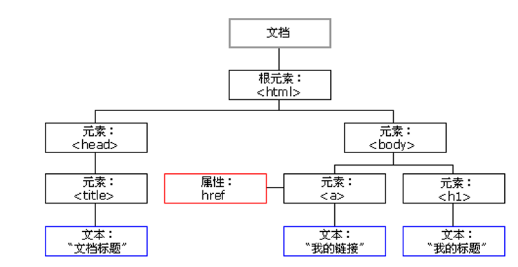

JS 基础 DOM
1 DOM 简介
文档对象模型（Document Object Model，简称 DOM），是 W3C 组织推荐的处理可扩展标记语言（HTML或者XML）的标准编程接口。
W3C 已经定义了一系列的 DOM 接口，通过这些 DOM 接口可以改变网页的内容、结构和样式。
- 文档：一个页面就是一个文档，DOM 中使用 doucument 来表示
- 元素：页面中的所有标签都是元素，DOM中使用 element 表示
- 节点：网页中的所有内容都是节点（标签，属性，文本，注释等），DOM中使用node表示
DOM 把以上内容都看做是对象
2 获取元素
2.1 根据ID获取
getElementByld() 返回带ID的元素对象
doucument.getElementByld('id名')console.dir() 可以打印我们获取的元素对象
2.2 根据标签名获取
getElementByTagName() 返回带有标签名的对象的集合
doucument.getElementsByTagName('标签名');
//或者根据标签名获取父元素内部所有指定标签名的子元素
ol.getElementsByTagName('li');返回的是获取过来元素对象的集合，以伪数组的形式存储
2.3 通过H5新增方法获取
| 方法 | 作用 |
|---|---|
document.getElementsByClassName('类名') |
根据类名返回元素对象合集 |
document.querySelector('选择器'); |
根据指定选择器返回第一个元素对象 |
document.querySelectorAll('选择器'); |
根据指定选择器返回所有元素对象 |
querySelector 和 querySelectorAll 里面的选择器需要加符号,比如: document.querySelector('#nav');
2.4 获取特殊元素
| 方法 | 作用 |
|---|---|
document.body; |
返回body元素对象 |
document.documentElement; |
返回html元素对象 |
3 事件基础
触发-响应机制。
3.1 执行步骤
- 获取事件源
- 注册事件(绑定事件)
- 添加事件处理程序(采取函数赋值形式)
<script>
// 1. 获取事件源
var div = document.querySelector('div');
// 2. 绑定事件 注册事件
// div.onclick
// 3. 添加事件处理程序
div.onclick = function() {
console.log('我被选中了');
}
</script>3.2 鼠标事件
| 鼠标事件 | 触发条件 |
|---|---|
| onclick | 鼠标点击左键触发 |
| onmouseover | 鼠标经过触发 |
| onmouseout | 鼠标离开触发 |
| onfocus | 获得鼠标焦点触发 |
| onblur | 失去鼠标焦点触发 |
| onmousemove | 鼠标移动触发 |
| onmouseup | 鼠标弹起触发 |
| onmousedown | 鼠标按下触发 |
4 操作元素
我们可以利用 DOM 操作元素来改变元素里面的内容、属性等。
4.1 元素内容
element.innerText
//从起始位置到终止位置的内容，但它去除html标签，同时空格和换行也会去掉。
element.innerHTML
//起始位置到终止位置的全部内容，包括HTML标签，同时保留空格和换行4.2 元素属性
// 元素.属性
img.src = "xxx";
input.value = "xxx";
input.type = "xxx";
input.checked = "xxx";
input.selected = true / false;
input.disabled = true / false;4.3 样式属性
- 行内样式
// element.style
div.style.backgroundColor = 'pink';
div.style.width = '250px';- 类名样式
// element.className<body>
<div class="first">文本</div>
<script>
// 1. 使用 element.style 获得修改元素样式 如果样式比较少 或者 功能简单的情况下使用
var test = document.querySelector('div');
test.onclick = function() {
// this.style.backgroundColor = 'purple';
// 让我们当前元素的类名改为了 change
// 2. 我们可以通过 修改元素的className更改元素的样式 适合于样式较多或者功能复杂的情况
// 3. 如果想要保留原先的类名，我们可以这么做 多类名选择器
// this.className = 'change';
this.className = 'first change';
}
</script>
</body>4.4 自定义属性
- 获取属性值
//获取内置属性值(元素本身自带的属性)element.属性;//获取自定义的属性或内置属性值element.getAttribute('属性');- 设置属性值
//设置内置属性值element.属性 = '值';//设置自定义的属性或内置属性值element.setAttribute('属性');- 移除属性值
element.removeAttribute('属性');- 自定义属性目的：
- 保存并保存数据，有些数据可以保存到页面中而不用保存到数据库中
- 有些自定义属性很容易引起歧义，不容易判断到底是内置属性还是自定义的，所以H5有了规定
- 设置自定义属性
H5规定自定义属性 data-开头作为属性名并赋值
<div data-index = "1"></>// 或者使用JavaScript设置div.setAttribute('data-index',1);- 获取自定义属性
- 兼容性获取
element.getAttribute('data-index') - H5新增的：
element.dataset.index或element.dataset['index']IE11才开始支持
<body> <div getTime="20" data-index="2" data-list-name="andy"></div> <script> var div = document.querySelector('div'); console.log(div.getAttribute('getTime')); div.setAttribute('data-time', 20); console.log(div.getAttribute('data-index')); console.log(div.getAttribute('data-list-name')); // h5新增的获取自定义属性的方法 它只能获取data-开头的 // dataset 是一个集合里面存放了所有以data开头的自定义属性 console.log(div.dataset); console.log(div.dataset.index); console.log(div.dataset['index']); // 如果自定义属性里面有多个-链接的单词，我们获取的时候采取 驼峰命名法 console.log(div.dataset.listName); console.log(div.dataset['listName']); </script></body>5 节点
5.1 节点概述
网页中的所有内容都是节点（标签、属性、文本、注释等），在DOM 中，节点使用 node 来表示。
HTML DOM 树中的所有节点均可通过 JavaScript 进行访问，所有 HTML 元素（节点）均可被修改，也可以创建或删除。
一般的，节点至少拥有 nodeType（节点类型）、nodeName（节点名称）和 nodeValue（节点值）这三个基本属性。
- 元素节点：nodeType 为1
- 属性节点：nodeType 为2
- 文本节点：nodeType 为3（文本节点包括文字、空格、换行等）
我们在实际开发中，节点操作主要操作的是元素节点
利用 DOM 树可以把节点划分为不同的层级关系，常见的是父子兄层级关系。
5.2 父节点
node.parentNode5.3 子节点
parentNode.childNodes //返回所有的子节点的集合parentNode.children //返回所有的子元素节点的集合，常用parentNode.firstChild //所有子节点中的第一个子结点parentNode.lastChild //所有子节点中的最后一个子结点parentNode.firstElementChild //所有子节点中的第一个子元素结点，兼容性parentNode.lastElementChild //所有子节点中的最后一个子元素结点，兼容性//由于一些兼容性问题，我们可以用以下方法返回第一个和最后一个子元素节点：parentNode.chilren[0]parentNode.chilren[parentNode.chilren.length - 1]5.4 兄弟节点
node.nextSibling //下一个兄弟节点node.previousSibling //上一个兄弟节点node.nextElementSibling //下一个兄弟元素节点，兼容性node.previousElementSibling //上一个兄弟节点，兼容性//可以自己封装函数解决兼容性问题function getNextElementSibling(element) { var el = element; while(el = el.nextSibling) { if(el.nodeType === 1){ return el; } } return null;}5.5 创建节点
5.5.1 添加节点
node.appendChild() 方法将一个节点添加到指定父节点的子节点列表末尾。node.insertBefore() 方法将一个节点添加到父节点的指定子节点前面5.5.2 删除节点
node.removeChild(child)5.5.3 复制节点
node.cloneNode()- 如果括号参数为空或者为 false ，则是浅拷贝，即只克隆复制节点本身，不克隆里面的子节点
- 如果括号参数为 true ，则是深度拷贝，会复制节点本身以及里面所有的子节点
6 DOM 核心
对于DOM操作，我们主要针对子元素的操作，主要有：
6.1 创建
- document.write
- innerHTML
- createElement
6.2 增
- appendChild
- insertBefore
6.3 删
- removeChild
6.4 改
- 修改元素属性：src、href、title 等
- 修改普通元素内容：innerHTML、innerText
- 修改表单元素：value、type、disabled
- 修改元素样式：style、className
6.5 查
- DOM提供的API方法：getElementById、getElementsByTagName (方法较老，不推荐)
- H5提供的新方法：querySelector、querySelectorAll (推荐)
- 利用节点操作获取元素：父（parentNode）、子（children）、兄（previousElementSibling、nextElementSibling）（推荐）
6.6 属性操作
主要针对于自定义属性
- setAttribute：设置dom的属性值
- getAttribute：得到dom的属性值
- removeAttribute：移除属性
7 事件高级
7.1 注册事件（绑定事件）
给元素添加事件，称为注册事件或者绑定事件。
注册事件有两种方式：传统方式和方法监听注册方式。
传统方式具有注册事件的唯一性。
1 addEventListener 事件监听方式
eventTarget.addEventListener(type,listener[,useCapture])type:事件类型字符串，比如 click 、mouseover，注意这里不要带onlistener：事件处理函数，事件发生时，会调用该监听函数useCapture：可选参数，是一个布尔值，默认是 false。
<body> <button>传统注册事件</button> <button>方法监听注册事件</button> <button>ie9 attachEvent</button> <script> var btns = document.querySelectorAll('button'); // 1. 传统方式注册事件 btns[0].onclick = function() { alert('hi'); } btns[0].onclick = function() { alert('hao a u'); } // 2. 事件监听注册事件 addEventListener // (1) 里面的事件类型是字符串 所以加引号 而且不带on // (2) 同一个元素 同一个事件可以添加多个侦听器（事件处理程序） btns[1].addEventListener('click', function() { alert(22); }) btns[1].addEventListener('click', function() { alert(33); }) // 3. attachEvent ie9以前的版本支持 btns[2].attachEvent('onclick', function() { alert(11); }) </script></body>2 attachEvent事件监听方式（兼容）
eventTarget.attachEvent(eventNameWithOn,callback)3 注册事件兼容性解决方案
function addEventListener(element, eventName, fn) { // 判断当前浏览器是否支持 addEventListener 方法 if (element.addEventListener) { element.addEventListener(eventName, fn); // 第三个参数 默认是false } else if (element.attachEvent) { element.attachEvent('on' + eventName, fn); } else { // 相当于 element.onclick = fn; element['on' + eventName] = fn; }}7.2 删除事件（解绑事件）
1 removeEventListener 删除事件方式
eventTarget.removeEventListener(type,listener[,useCapture]);type:事件类型字符串，比如click、mouseover，注意这里不要带 onlistener：事件处理函数，事件发生时，会调用该监听函数useCapture：可选参数，是一个布尔值，默认是 false。
2 detachEvent删除事件方式(兼容)
eventTarget.detachEvent(eventNameWithOn,callback);3 传统事件删除方式
eventTarget.onclick = null;<body> <div>1</div> <div>2</div> <div>3</div> <script> var divs = document.querySelectorAll('div'); divs[0].onclick = function() { alert(11); // 1. 传统方式删除事件 divs[0].onclick = null; } // 2.removeEventListener 删除事件 divs[1].addEventListener('click',fn); //里面的fn不需要调用加小括号 function fn(){ alert(22); divs[1].removeEventListener('click',fn); } // 3.IE9 中的删除事件方式 divs[2].attachEvent('onclick',fn1); function fn1() { alert(33); divs[2].detachEvent('onclick',fn1); } </script></body>4 删除事件兼容性解决方案
function removeEventListener(element, eventName, fn) { // 判断当前浏览器是否支持 removeEventListener 方法 if (element.removeEventListener) { element.removeEventListener(eventName, fn); // 第三个参数 默认是false } else if (element.detachEvent) { element.detachEvent('on' + eventName, fn); } else { element['on' + eventName] = null; } 7.3 DOM事件流
- 事件流描述的是从页面中接收事件的顺序
- 事件发生时会在元素节点之间按照特定的顺序传播，这个传播过程即DOM事件流
- 事件冒泡： IE 最早提出，事件开始时由最具体的元素接收，然后逐级向上传播到到 DOM 最顶层节点的过程。
- 事件捕获： 网景最早提出，由 DOM 最顶层节点开始，然后逐级向下传播到到最具体的元素接收的过程。
1 捕获阶段
<body> <div class="father"> <div class="son">son盒子</div> </div> <script> // dom 事件流 三个阶段 // 1. JS 代码中只能执行捕获或者冒泡其中的一个阶段。 // 2. onclick 和 attachEvent（ie） 只能得到冒泡阶段。 // 3. 捕获阶段 如果addEventListener 第三个参数是 true 那么则处于捕获阶段 document -> html -> body -> father -> son var son = document.querySelector('.son'); son.addEventListener('click', function() { alert('son'); }, true); var father = document.querySelector('.father'); father.addEventListener('click', function() { alert('father'); }, true); </script></body>2 冒泡阶段
<body> <div class="father"> <div class="son">son盒子</div> </div> <script> // 4. 冒泡阶段 如果addEventListener 第三个参数是 false 或者 省略 那么则处于冒泡阶段 son -> father ->body -> html -> document var son = document.querySelector('.son'); son.addEventListener('click', function() { alert('son'); }, false); var father = document.querySelector('.father'); father.addEventListener('click', function() { alert('father'); }, false); document.addEventListener('click', function() { alert('document'); }) </script></body>3 小结
- JS 代码中只能执行捕获或者冒泡其中的一个阶段
onclick和attachEvent只能得到冒泡阶段addEventListener(type,listener[,useCapture])第三个参数如果是 true，表示在事件捕获阶段调用事件处理程序；如果是 false (不写默认就是false),表示在事件冒泡阶段调用事件处理程序- 实际开发中我们很少使用事件捕获，我们更关注事件冒泡。
- 有些事件是没有冒泡的，比如 onblur、onfocus、onmouseenter、onmouseleave
7.4 事件对象
eventTarget.onclick = function(event) { // 这个 event 就是事件对象，我们还喜欢的写成 e 或者 evt } eventTarget.addEventListener('click', function(event) { // 这个 event 就是事件对象，我们还喜欢的写成 e 或者 evt })- 官方解释：event 对象代表事件的状态，比如键盘按键的状态、鼠标的位置、鼠标按钮的状态
- 简单理解：
- 事件发生后，跟事件相关的一系列信息数据的集合都放到这个对象里面
- 这个对象就是事件对象 event，它有很多属性和方法，比如
- 谁绑定了这个事件
- 鼠标触发事件的话，会得到鼠标的相关信息，如鼠标位置
- 键盘触发事件的话，会得到键盘的相关信息，如按了哪个键
- 这个 event 是个形参，系统帮我们设定为事件对象，不需要传递实参过去
- 当我们注册事件时， event 对象就会被系统自动创建，并依次传递给事件监听器（事件处理函数）
1 事件对象的兼容性方案
<body> <div>123</div> <script> // 事件对象 var div = document.querySelector('div'); div.onclick = function(e) { // console.log(e); // console.log(window.event); // e = e || window.event; console.log(e); } // 1. event 就是一个事件对象 写到我们侦听函数的 小括号里面 当形参来看 // 2. 事件对象只有有了事件才会存在，它是系统给我们自动创建的，不需要我们传递参数 // 3. 事件对象 是 我们事件的一系列相关数据的集合 跟事件相关的 比如鼠标点击里面就包含了鼠标的相关信息，鼠标坐标啊，如果是键盘事件里面就包含的键盘事件的信息 比如 判断用户按下了那个键 // 4. 这个事件对象我们可以自己命名 比如 event 、 evt、 e // 5. 事件对象也有兼容性问题 ie678 通过 window.event 兼容性的写法 e = e || window.event; </script></body>2 事件对象的常见属性和方法
| 事件对象属性方法 | 说明 |
|---|---|
| e.target | 返回触发事件的对象 标准 |
| e.srcElement | 返回触发事件的对象 非标准 ie6-8使用 |
| e.type | 返回事件的类型 比如click mouseover 不带on |
| e.cancelBubble | 该属性阻止冒泡，非标准，ie6-8使用 |
| e.returnValue | 该属性阻止默认行为 非标准，ie6-8使用 |
| e.preventDefault() | 该方法阻止默认行为 标准 比如不让链接跳转 |
| e.stopPropagation() | 阻止冒泡 标准 |
e.target 和 this 的区别：
- this 是事件绑定的元素， 这个函数的调用者（绑定这个事件的元素）
- e.target 是事件触发的元素
7.5 事件对象阻止默认行为
<body> <div>123</div> <a href="http://www.baidu.com">百度</a> <form action="http://www.baidu.com"> <input type="submit" value="提交" name="sub"> </form> <script> // 常见事件对象的属性和方法 // 1. 返回事件类型 var div = document.querySelector('div'); div.addEventListener('click', fn); div.addEventListener('mouseover', fn); div.addEventListener('mouseout', fn); function fn(e) { console.log(e.type); } // 2. 阻止默认行为（事件） 让链接不跳转 或者让提交按钮不提交 var a = document.querySelector('a'); a.addEventListener('click', function(e) { e.preventDefault(); // dom 标准写法 }) // 3. 传统的注册方式 a.onclick = function(e) { // 普通浏览器 e.preventDefault(); 方法 // e.preventDefault(); // 低版本浏览器 ie678 returnValue 属性 // e.returnValue; // 我们可以利用return false 也能阻止默认行为 没有兼容性问题 特点： return 后面的代码不执行了， 而且只限于传统的注册方式 return false; alert(11); } </script></body>7.6 阻止事件冒泡
//标准写法e.stopPropagation();<body> <div class="father"> <div class="son">son儿子</div> </div> <script> // 常见事件对象的属性和方法 // 阻止冒泡 dom 推荐的标准 stopPropagation() var son = document.querySelector('.son'); son.addEventListener('click', function(e) { alert('son'); e.stopPropagation(); // stop 停止 Propagation 传播 e.cancelBubble = true; // 非标准 cancel 取消 bubble 泡泡 }, false); var father = document.querySelector('.father'); father.addEventListener('click', function() { alert('father'); }, false); document.addEventListener('click', function() { alert('document'); }) </script></body>7.7 事件委托
- 事件委托也称为事件代理，在 jQuery 里面称为事件委派
- 事件委托的原理：不是每个子节点单独设置事件监听器，而是事件监听器设置在其父节点上，然后利用冒泡原理影响设置每个子节点
<body> <ul> <li>知否知否，点我应有弹框在手！</li> <li>知否知否，点我应有弹框在手！</li> <li>知否知否，点我应有弹框在手！</li> <li>知否知否，点我应有弹框在手！</li> <li>知否知否，点我应有弹框在手！</li> </ul> <script> // 事件委托的核心原理：给父节点添加侦听器， 利用事件冒泡影响每一个子节点 var ul = document.querySelector('ul'); ul.addEventListener('click', function(e) { // alert('知否知否，点我应有弹框在手！'); // e.target 这个可以得到我们点击的对象 e.target.style.backgroundColor = 'pink'; // 点了谁，就让谁的style里面的backgroundColor颜色变为pink }) </script></body>7.8 常用鼠标事件
| 鼠标事件 | 触发条件 |
|---|---|
| onclick | 鼠标点击左键触发 |
| onmouseover | 鼠标经过触发 |
| onmouseout | 鼠标离开触发 |
| onfocus | 获得鼠标焦点触发 |
| onblur | 失去鼠标焦点触发 |
| onmousemove | 鼠标移动触发 |
| onmouseup | 鼠标弹起触发 |
| onmousedown | 鼠标按下触发 |
7.9 常用的键盘事件
| 键盘事件 | 触发条件 |
|---|---|
| onkeyup | 某个键盘按键被松开时触发 |
| onkeydown | 某个键盘按键被按下时触发 |
| onkeypress | 某个键盘按键被按下时触发，但是它不识别功能键，比如 ctrl、 shift、 箭头等 |